| ・平成30年度修士論文審査会 (H31.02.15) | |||
去年は5人で今年も5人発表。今年はM2で参加した学会のプレゼンシートや筆頭論文の査読やり取りがあるので、研究の完成度が いい感じでした。結局、発表練習も1回だけです。やっぱり就活だけになるとなかなか研究の完成度がそこまであがりません。 |
|||
|
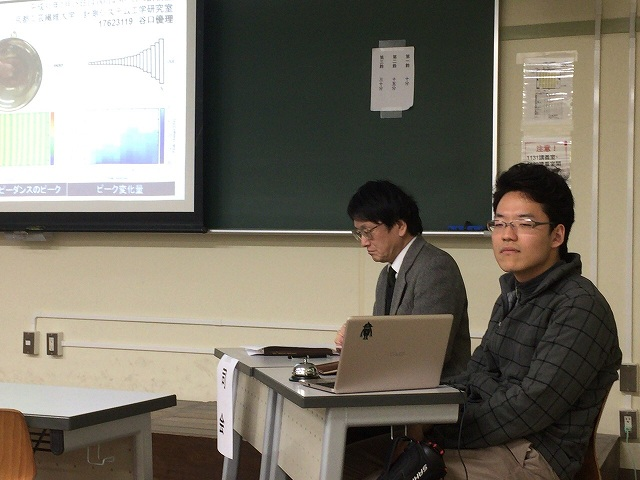
計時はB4のM四さん |
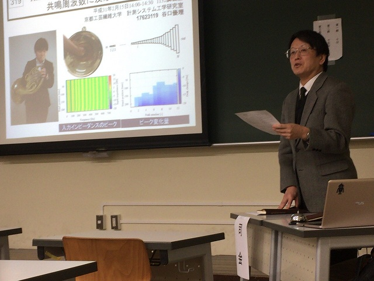
スタート | ||
|
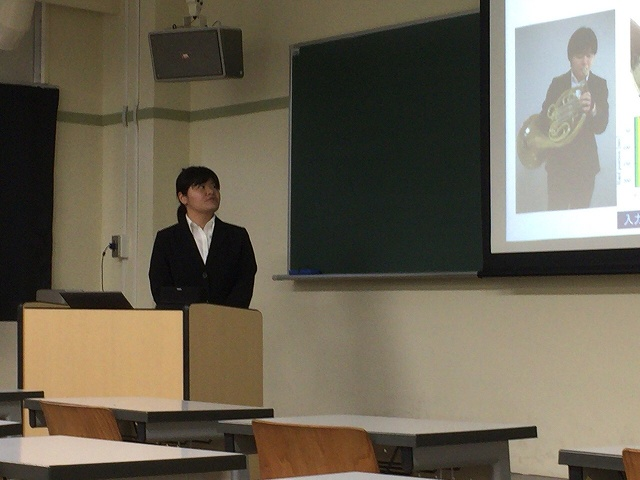
ホルン奏者のT口さん |
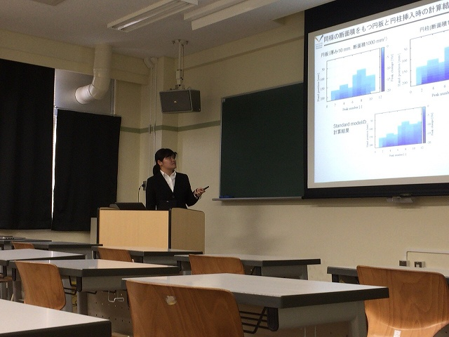
持ち込みテーマがここに完成 | ||
|
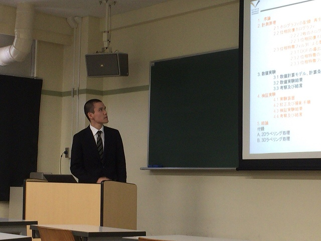
K保西さんの問題解決しない方法の解決 |
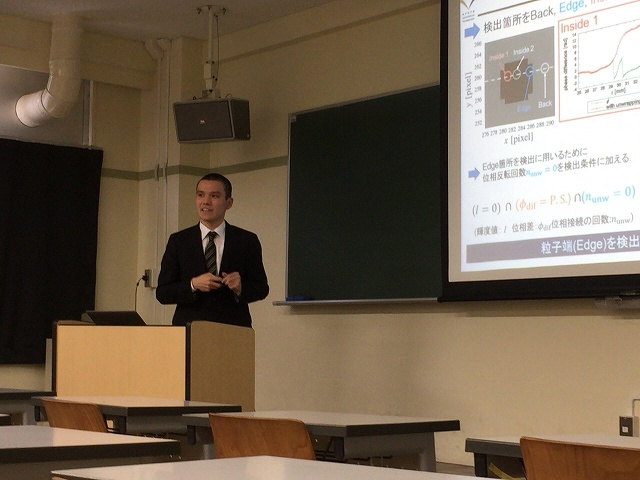
M1の結果ベースにたどり着いた結論 | ||
|
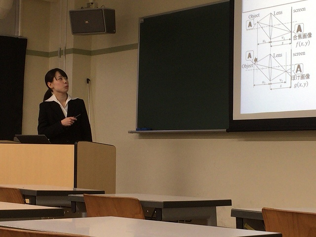
D口さんのDOD |
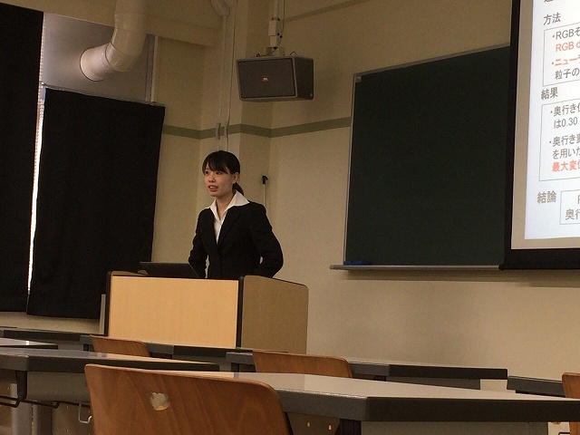
そして機械学習 | ||
|
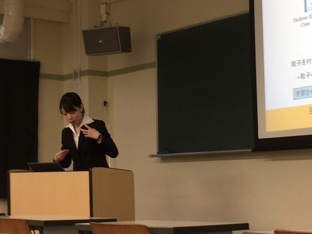
手でしゃべる感じ |
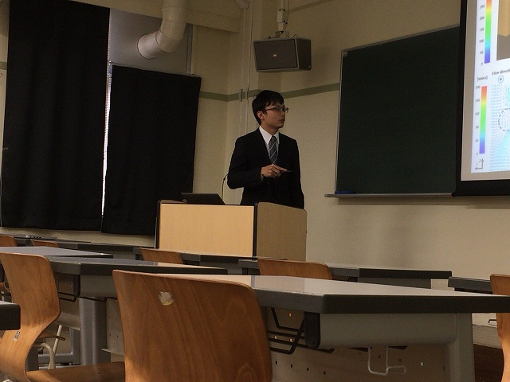
E藤さんのタイヤハウス流れ | ||
|
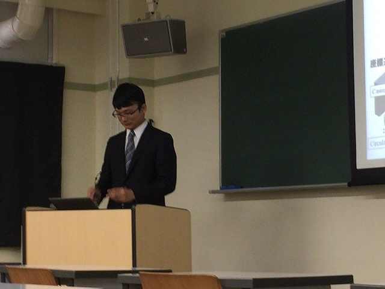
3次元場多い感じで |
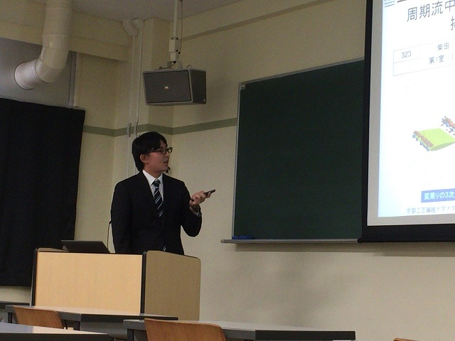
最後はS田さんの翼周り | ||
|
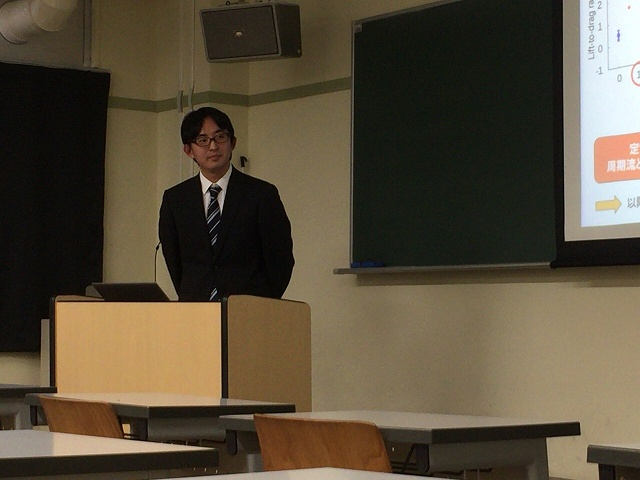
自分の論文を引用して使ってます |
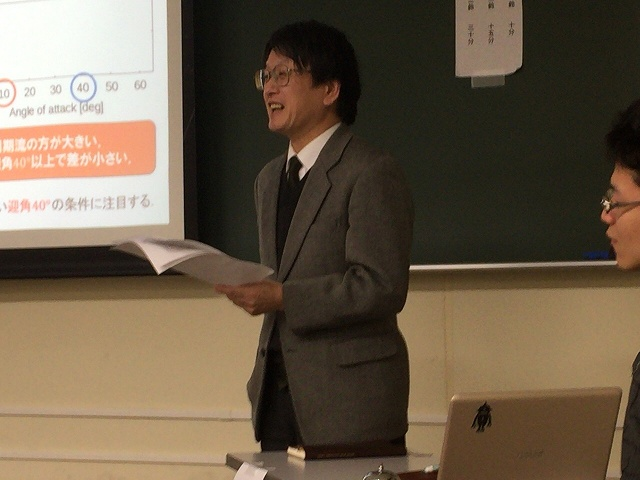
無事に終了！ | ||